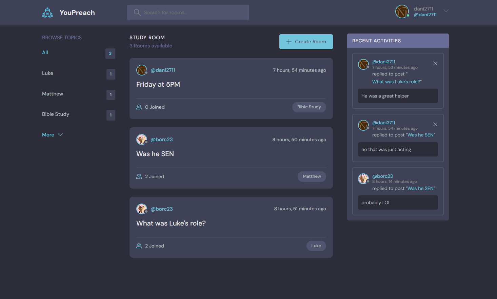
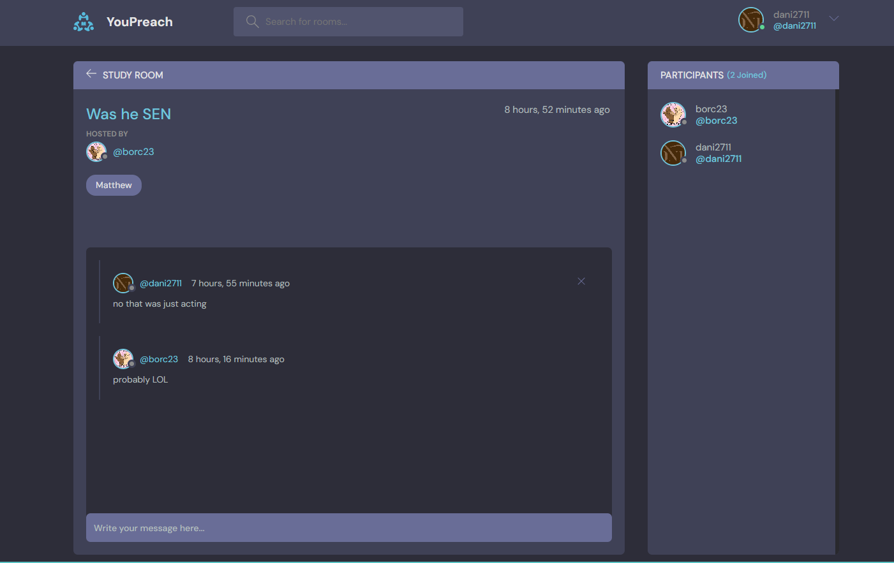
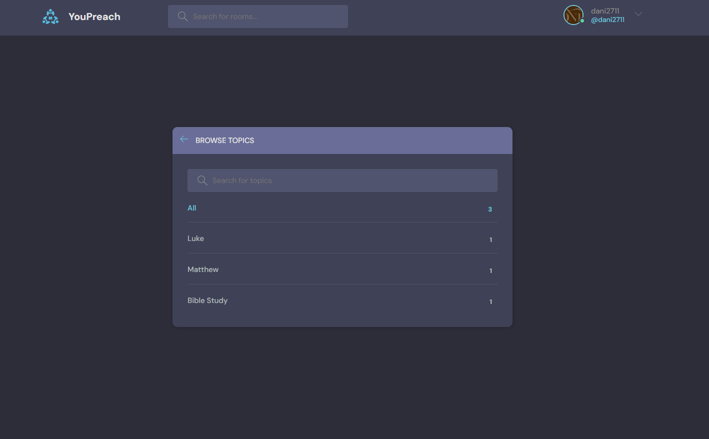
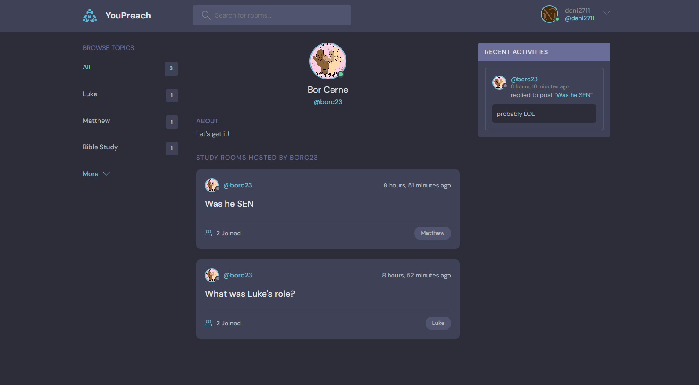
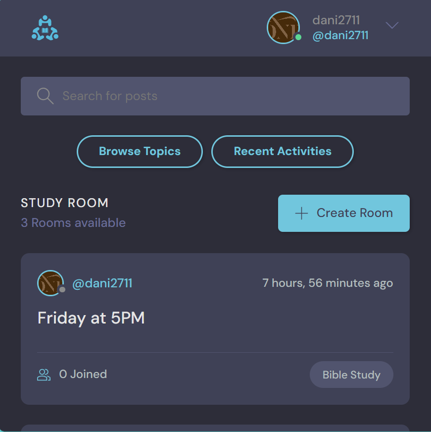

Django Webapp YouPreach
This was a project I started back in August 2023 when I first learned Django. I was the sole creator/developer for the project before I looked for theme online.
The system has live feed of people that want to study Bible together as they can interact and see what others are up to.
Also implemented an API where people can access data about the study rooms created inside the webapp.
Customers can make their own rooms and have it accessed by others.
It could be a base for any further implications for any internal companies chat webapps that would get updates based on their personal needs.
Technologies:
- - Python
- - Django + Django REST Framework
- - YouPreach API
- - HTML, CSS, JavaScript
Home Page

Room Sample

Topics Menu

User Profile Sample

Mobile Version
